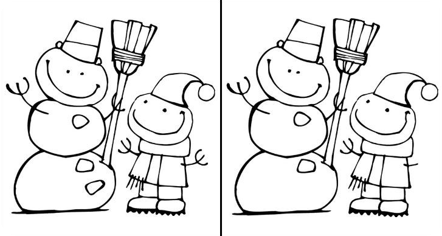

Because it is an integral part of his work
Even though usually the programmer don't draw the design by himself, he often work with a ready-made design and should at least be familiar with the basics.
In many cases the final result is different from the layout, and this is a consequence of that fact that programmer may not pay attention to details…
…because he just don’t know where to look, and what to look for
Little things matter!
It's like finding 5 differences in a picture
But a way more complicated!
Design is Art
Design is creative process
In the same way as programming
Design is Engineering
In the same way as programming
And the result is a
The product have to be simple, useful and to solve user's problem by obvious way
If the product does not solve the problem, the user does not care how it looks like
and how awesome the code behind it
If the product may solve the problem, but user don't understand how to use it — he would use something else instead
The product have to be simple, useful and to solve user's problem by obvious way
That is a simplified version of how we build UX design
When UX is finished we can move on to…
It is possible to be a strong developer without any knowledge of design, but a good familiarity with the basics of design will be a very good advantage and can open up additional opportunities for you.
A strong front-end developer who understands design can produce a better product than just a strong front-end developer.
Use Can't Unsee to measure your attention to detail
cantunsee.spaceWatch one of the best design channels on youtube
youtube.com/yemdigital